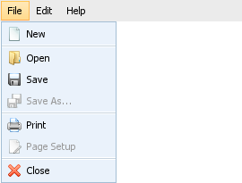
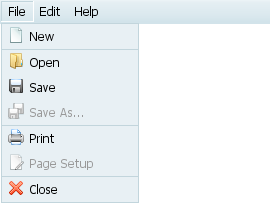
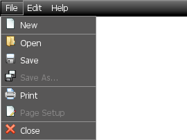

Skinning
There are two ways to set skin:
- Passing skin name to constructor (the second argument);
- Using setSkin method.
To set skin with constructor you should call dhtmlXMenuObject with the second argument, which contains skin name:
var menu = new dhtmlXMenuObject("parentId", "dhx_skyblue");
If you just initiate contextual menu and have no parent object yet, you can pass null as the first argument:
var menu = new dhtmlXMenuObject(null, "dhx_skyblue"); menu.renderAsContextMenu();
Also you can easily cnahge skin “on-the-fly” using setSkin method:
var menu = new dhtmlXMenuObject("parentId"); menu.setSkin("dhx_skyblue");
Available skins are:
| dhx_skyblue (the default one) | dhx_blue | dhx_black |
|  |  |  |